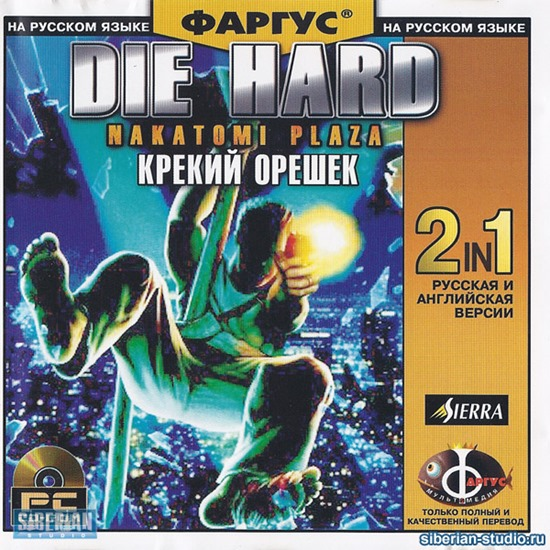

напиши мне краткое содержание крепкого орешка 1 с двумя абзацами и двумя заголовками к ним и сделай, пожалуйста, список из 6 элементов в конце.
Крепкий орешек 1 - это американский боевик 1988 года, режиссером которого является Джон МакТирнан.
Фильм основан на романе Роджера Зелазни "Ничто личного". В главных ролях снимались Брюс Уиллис, Алан Рикман и Бонни
Беделиа. Главный герой фильма, полицейский Джон Маклейн, попадает в заложники на Рождественской вечеринке в высотном
здании в Лос-Анджелесе. Он должен сражаться с террористами, которые захватили здание и держат заложников, включая его жену.
Фильм получил высокие оценки критиков и стал одним из самых успешных фильмов 1988 года. Крепкий орешек 1 также
считается классикой жанра "боевик" и стал началом франшизы "Крепкий орешек", которая включает в себя 5 фильмов.

Была даже игра, но я не прошёл дальше момента, где произошёл захват заложников
 Тут ВИКИ